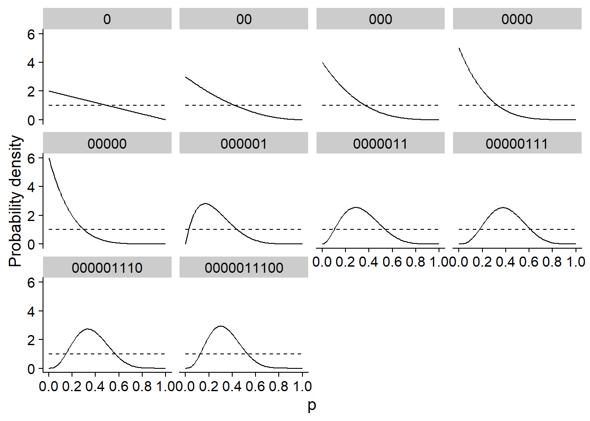
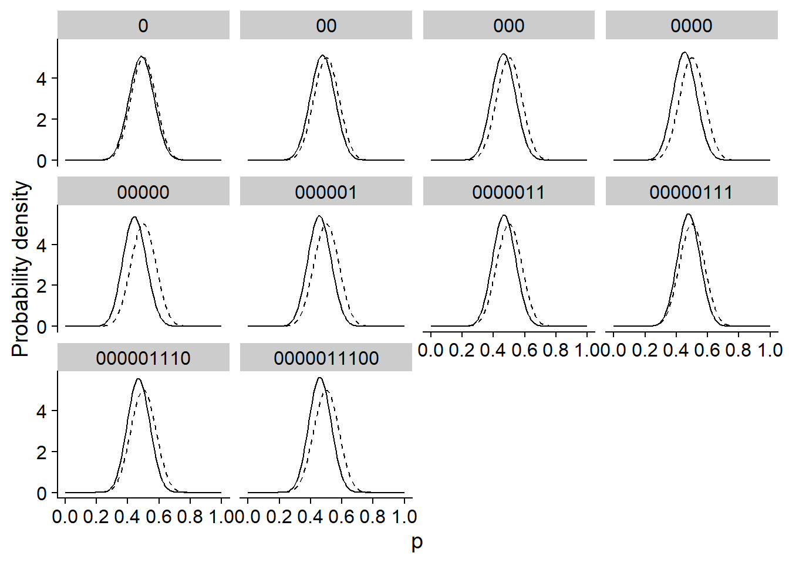
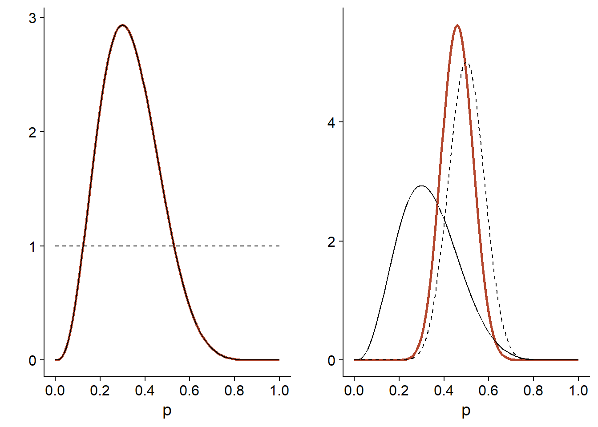
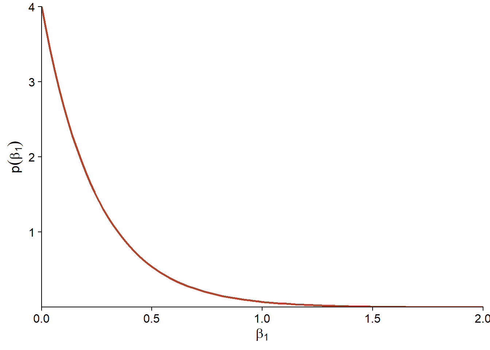
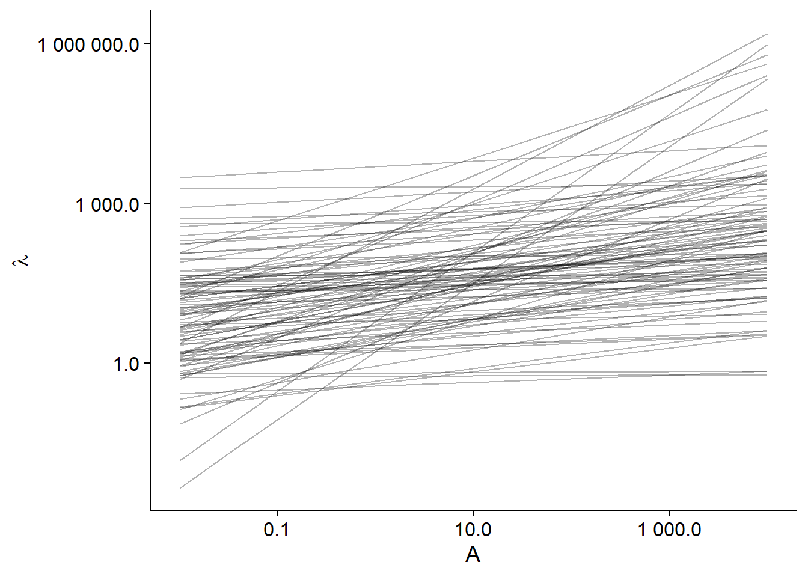
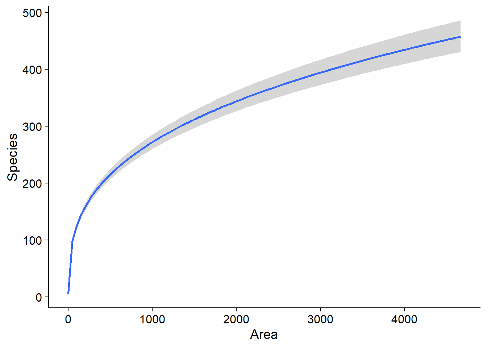
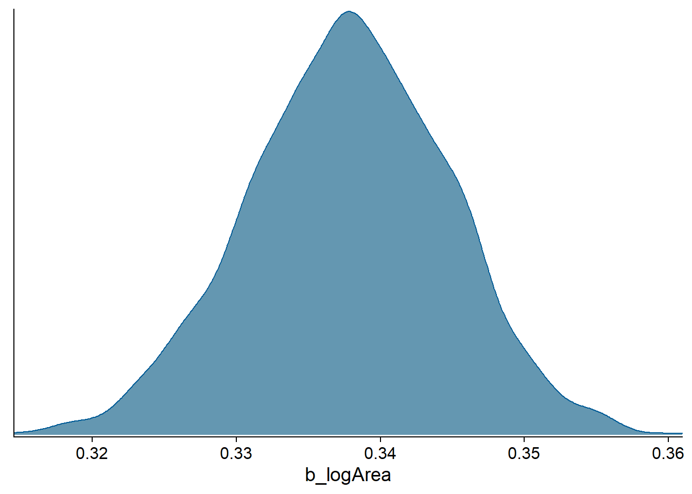
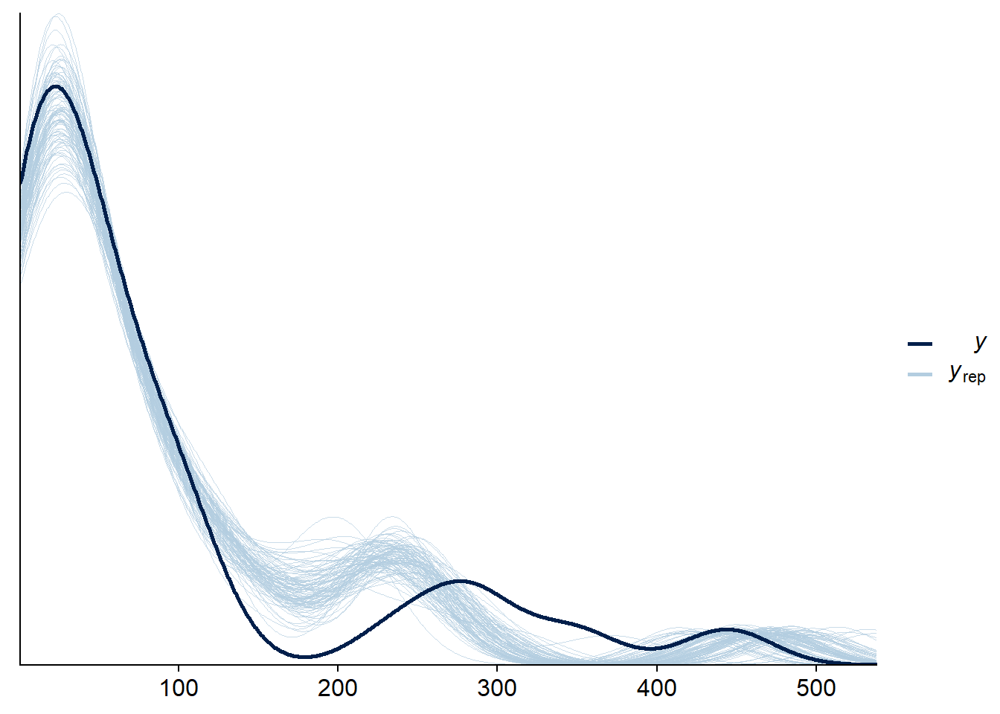
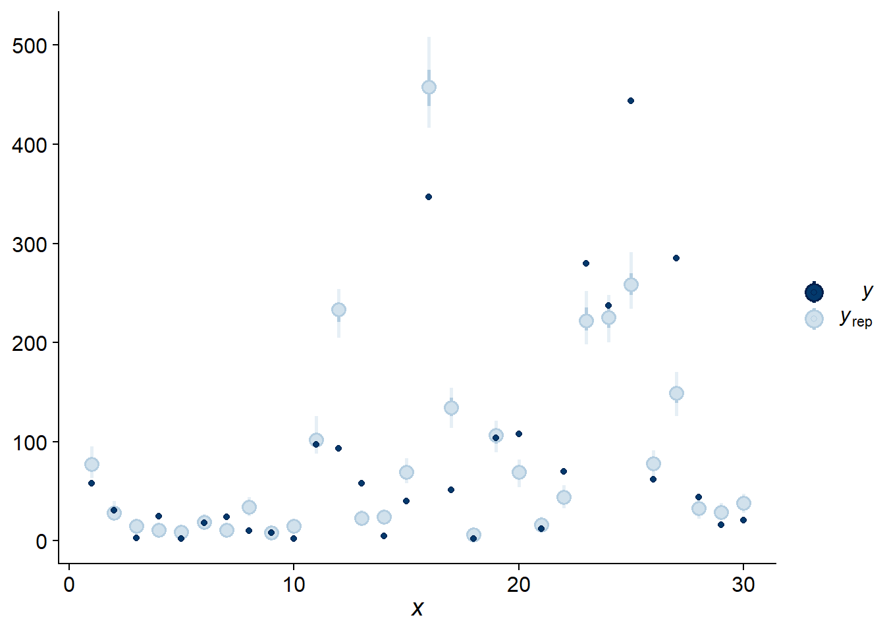
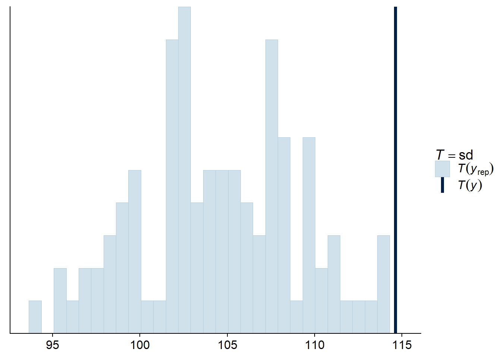

This class presents the basic concepts of the Bayesian approach to parameter estimation, in preparation for the use of hierarchical Bayesian models in the next two weeks.
We begin with a presentation of conditional probability theory and Bayes theorem, a topic that is not specific to Bayesian inference, but will be useful in understanding the logic of this approach.
Conditional probability
Bayesian inference
Example of Bayesian regression
Visualize and verify the fit of a model
Suppose a new test is designed to detect a disease by measuring the concentration of a certain protein in the blood. This concentration is higher on average in people with the disease than in people without the disease, but it is not possible to distinguish between the two groups perfectly. Clinical studies have estimated the following two properties of this test:
The sensitivity of the test, i.e. the probability of obtaining a positive result if the disease is present, is 95%.
The specificity of the test, i.e. the probability of obtaining a negative result if the disease is absent, is 99%.
Based on this information, can we determine the probability of having the disease if we receive a positive result?
As we will see below, this probability depends on the general prevalence of the disease in the population tested. Therefore, let’s assume that 0.2% of the tested population has the disease.
With this information, we can divide the tested population into 4 groups according to whether the disease is present (\(M_1\)) or not (\(M_0\)) and whether the test is positive (\(T_+\)) or negative (\(T_-\)). Out of 10,000 people receiving the test, we can calculate that on average:
0.2% x 10,000 = 20 will be affected.
Out of 20 people affected, on average 95% x 20 = 19 will receive a positive result, and 1 will receive a negative result.
Out of 9980 people not affected, on average 1% x 9980 = 99.8 (rounded to 100) will receive a positive result and the other 9880 will receive a negative result.
| Affected: \(M_1\) | Not affected: \(M_0\) | Total | |
|---|---|---|---|
| Positive test: \(T_+\) | 19 | 100 | 119 |
| Negative test: \(T_-\) | 1 | 9880 | 9881 |
| Total | 20 | 9980 | 10000 |
Therefore, out of the 119 people receiving a positive result on average, 19 / 119 = about 16% have the disease. Among those who receive a negative result, 1 / 9881 = about 0.01% are affected.
In the following section, we repeat this calculation using the concept of conditional probability.
If \(x\) and \(y\) are two random variables, the conditional probability \(p(y|x)\) is the probability of \(y\) for a given value of \(x\) (also called the probability of \(y\) given \(x\)).
In our example, we have two variables: \(M\) represents the presence or absence of the disease and \(T\) represents the positive or negative test result. The sensitivity of the test is the probability of \(T_+\) if the person is known to have the disease, i.e. \(P(T_+ | M_1)\), equal to 0.95. The specificity represents the conditional probability \(P(T_- | M_0)\), equal to 0.99.
The joint probability of obtaining both a certain value of \(x\) and a certain value of \(y\), denoted \(p(x, y)\), can be calculated in two ways: (1) the probability of obtaining \(x\) multiplied by the probability of obtaining \(y\), given \(x\); or (2) the probability of obtaining \(y\) multiplied by the probability of obtaining \(x\), given \(y\).
\[p(x, y) = p(x) p(y | x) = p(y) p(x | y)\]
In our example, here are the two ways to calculate the probability of having the disease and getting a positive test:
\[p(M_1, T_+) = p(M_1) p(T_+ | M_1) = p(T_+) p(M_1 | T_+)\]
The marginal probability of a variable \(y\), \(p(y)\), is its probability if the value of the other variables is unknown. If we do not directly know \(p(y)\), but know \(p(y, x)\) for each possible value of another variable \(x\), then \(p(y)\) is the sum of the joint probabilities of \(x\) and \(y\) for each value of \(x\). (Marginalization is the action of summing up the different possibilities for variables other than \(y\)).
\[p(y) = \sum_x p(y, x) = \sum_x p(y|x) p(x)\]
If \(x\) is a continuous variable, the principle is the same, but the sum becomes an integral:
\[p(y) = \int p(y, x) \text{d}x = \int p(y|x) p(x) \text{d}x\]
Returning to our example, we can express each item in the table as a joint probability with specific values of \(M\) or \(T\) (inner cells), or as a marginal probability (for the row and column sums).
| \(M_1\) | \(M_0\) | Total | |
|---|---|---|---|
| \(T_+\) | \(p(M_1, T_+)\) | \(p(M_0, T_+)\) | \(p(T_+)\) |
| \(T_-\) | \(p(M_1, T_-)\) | \(p(M_0, T_-)\) | \(p(T_-)\) |
| Total | \(p(M_1)\) | \(p(M_0)\) | 1 |
This allows us to fill in the cells in the table using the relationship between conditional, joint, and marginal probabilities. For example, for the row \(T_+\):
\(p(M_1, T_+) = p(M_1) p(T_+ | M_1) = 0.002 \times 0.95 = 0.0019\)
\(p(M_0, T_+) = p(M_0) p(T_+ | M_0) = 0.998 \times 0.01 = 0.00998\) (\(p(T_+ | M_0)\) is the probability to get a false positive, so the complement of specificity, equal to 1%.)
\(p(T_+) = p(M_1, T_+) + p(M_0, T_+) = 0.019 + 0.00998 \approx 0.119\)
Here is the full table:
| \(M_1\) | \(M_0\) | Total | |
|---|---|---|---|
| \(T_+\) | \(p(M_1, T_+)\) = 0.0019 | \(p(M_0, T_+)\) = 0.01 | \(p(T_+)\) = 0.0119 |
| \(T_-\) | \(p(M_1, T_-)\) = 0.0001 | \(p(M_0, T_-)\) = 0.988 | \(p(T_-)\) = 0.9881 |
| Total | \(p(M_1)\) = 0.002 | \(p(M_0)\) = 0.998 | 1 |
For two variables \(x\) and \(y\), it may be easier to calculate \(p(y|x)\) than \(p(x|y)\), or vice versa. In our example, we knew the probability of having a positive result if the disease is present \(p(T_+ | M_1)\), but we were looking for the probability that the disease is present if the result is positive: \(p(M_1 | T_+)\). Bayes’ theorem tells us how to “invert” the conditional probability without having to fill in a table like the one above.
Remember that there are two ways to compute the joint probability \(p(x, y)\) with a value of \(x\) and a value of \(y\):
\[p(x, y) = p(x) p(y | x) = p(y) p(x | y)\]
If we divide both sides of the right equality by \(p(y)\), we obtain Bayes’ theorem:
\[p(x|y) = \frac{p(x) p(y | x)}{p(y)}\]
This tells us that we can compute the probability distribution from \(x\) conditional on \(y\) if we know: (1) the probability distribution of \(y\) conditional on \(x\) and (2) the marginal probability distribution of \(x\). As for the denominator \(p(y)\), it can be obtained by summing (or integrating) \(p(x) p(y|x)\) over the set of possible values of \(x\).
In our example, the application of the theorem shows that \(p(M_1 | T_+)\) = 16%, as previously determined.
\[p(M_1 | T_+) = \frac{p(T_+ | M_1) p(M_1)}{p(T_+)}\]
–
\[p(M_1 | T_+) = \frac{p(T_+ | M_1) p(M_1)}{p(T_+ | M_1) p(M_1) + p(T_+ | M_0) p(M_0)}\]
\[p(M_1 | T_+) = \frac{0.95 \times 0.002}{0.95 \times 0.002 + 0.01 \times 0.998} = 0.16\]
Note that with a positive result, the probability of having the disease is multiplied by 80 (16% vs. 0.2%), but it is still more likely to not have it. In other words, if a disease is quite rare, most positive results will be false positives. This is why some tests are not performed without the presence of other symptoms that would increase the probability of being affected before the test. The question of whether or not to perform a test is sometimes a difficult ethical decision, because both a lack of detection or a false alarm have harmful effects.
Similarly, one could calculate \(p(M_1 | T_-)\) = 0.01%. So with a negative result, the probability of being affected is divided by 20 relative to the general prevalence of the disease.
By rearranging the terms of Bayes’ theorem:
\[p(M_1 | T_+) = \frac{p(T_+ | M_1)}{p(T_+)} p(M_1)\]
we see that it is a method to revise an initial probability \(p(M_1)\) according to new information given by the test result, to obtain a probability \(p(M_1 | T_+)\). This idea is the basis of Bayesian inference.
In the previous section, we saw how Bayes’ theorem allows us to calculate the probability of having a disease based on its general prevalence \(p(M_1)\) and the result of a screening test, \(T_+\) or \(T_-\):
\[p(M_1 | T_+) = \frac{p(T_+ | M_1)}{p(T_+)} p(M_1)\] \[p(M_1 | T_-) = \frac{p(T_- | M_1)}{p(T_-)} p(M_1)\]
Now consider \(M_1\) as a hypothesis that a given patient has the disease. The prior probability of \(M_1\) (before the test) is equal to \(p(M_1)\). After the test, the posterior probability of \(M_1\) is \(p(M_1 | T_+)\) or \(p(M_1 | T_-)\), depending on the result.
According to the frequentist interpretation, probabilities represent the frequency of events after a large number of repetitions of an observation or experiment. In this case, we can assign a probability to \(M_1\) because the patient comes from a population and the disease has a certain frequency in that population.
Frequentist interpretation is the basis of most introductory statistics courses, as it allows, among other things, the definition of hypothesis tests and confidence intervals. In this approach, a probability can be assigned to statistics based on observed data, such as the mean of a sample \(\bar{x}\), but not to model parameters such as the population mean \(\mu\). When defining a 95% confidence interval around \(\bar{x}\), it is not that this particular interval that has a 95% probability of containing \(\mu\) (after sampling, the interval and \(\mu\) are both fixed), but it is 95% of the possible samples of \(x\) that would produce an interval containing the value of \(\mu\).
According to the Bayesian interpretation, probabilities represent our uncertainty about the value of a quantity. We can therefore speak of a probability distribution even for a presumed fixed value, e.g. a parameter of a model.
Historically, debates between the two approaches have often been acrimonious. Today, the same statisticians may use either the frequentist or the Bayesian approach depending on the nature of the problem. However, care must be taken to ensure that the results are always interpreted according to the approach used. Remember, for example, that a frequentist confidence interval does not represent a probability distribution of the parameter, or that checking the fit of a Bayesian model is not equivalent to a null hypothesis test.
Suppose we have a series of observations of a variable \(y\), which we represent by a model including an adjustable parameter \(\theta\). In the Bayesian approach, we assign a prior probability distribution to \(\theta\), \(p(\theta)\), representing the uncertainty on the value of the parameter before having observed the data. The probability of the observations \(y\), conditional on a given value of \(\theta\), is given by the likelihood function \(p(y|\theta)\).
From this information, we can use Bayes’ theorem to infer \(p(\theta | y)\), which is the posterior distribution of \(\theta\) after observing \(y\).
\[p(\theta | y) = \frac{p(y | \theta) p(\theta)}{p(y)}\]
The denominator \(p(y)\) is obtained by summing (or integrating) \(p(y | \theta) p(\theta)\) for all possible values of \(\theta\). Most of the time, this quantity cannot be calculated exactly, but it is approximated by the Monte-Carlo methods that we will see in the next lesson.
Here is a simple example to illustrate the principle of Bayesian inference. Suppose that ten throws of a coin produce the following series of values (0 = tails, 1 = heads): 0,0,0,0,0,0,0,1,1,1,1,0,0,0. We try to estimate \(p\), the probability of getting “heads” for this coin.
If \(y\) is the number of “heads” obtained among \(n\) throws, then the likelihood function is given by the binomial distribution: \(y \sim \text{Bin}(n, p)\).
The different panels of the graph below show the posterior distribution of \(p\) (solid line) after each throw in the sequence. In this case, the prior distribution indicated by the dotted line was very diffuse, giving an equal probability to each possible value of \(p\). After 10 throws, the maximum of the posterior distribution is equal to the proportion of “heads” in the data (0.3), which is also the maximum likelihood estimate.

The graph below shows the same inference, but with a prior distribution much more concentrated around 0.5. This distribution represents the idea that a coin is much more likely to be balanced (50% heads) and that deviations around this value are generally minor. In this case, the posterior distribution moves with the data, but remains much closer to the prior distribution.

Finally, the graph below compares the posterior distribution (orange line) according to each prior distribution (dotted line). The likelihood (identical in both cases) is indicated by a solid line and has been normalized to be compared to the distributions.
For the diffuse prior distribution (left), the posterior distribution is exactly proportional to the likelihood. When the prior distribution is more concentrated than the likelihood (right), the posterior distribution is in between, but closer to the prior distribution.

In some cases, prior knowledge can give us a fairly specific idea of the prior distribution to use. For example, the posterior distribution obtained from one study can be used as the prior distribution for a subsequent study.
More often, however, we can use a fairly diffuse distribution to penalize very implausible parameter values without unduly constraining the analysis. The term weakly informative prior describes this type of choice.
A common criticism of Bayesian inference is that assigning a prior distribution adds bias to the analysis. However, if the choice of this distribution is justified by the need to penalize too extreme values of the parameters, the role of the prior distribution is not so different from that of a random effect that shrinks the group means towards the general mean, or of the smoothing parameter in an additive model that penalizes too complex curves. All these methods are examples of regularization, i.e. the imposition of constraints that control the risk of overfitting in a complex model, without having to completely fix certain parameters and effects.
The choice of the prior distribution can be considered as an assumption in addition to the other assumptions of the model, such as the choice of the distribution representing the observations, the choice of the predictors and interactions to be included or excluded in the model, etc. Ultimately, it is the entire model that must be validated for its ability to reproduce the characteristics of the observations, including observations other than those used to fit the model.
Like maximum likelihood, Bayesian inference has the advantage of being applicable to any type of generative model, i.e. a model that mathematically describes how observations are generated from parameters. In a Bayesian approach, the parameters of various types of models, including all those seen in this course (generalized linear, mixed effects, additive, time-dependent and spatially-dependent models) can be estimated using the same algorithms; we will discuss these algorithms further in the next class. These algorithms produce the joint posterior distribution of the parameters of the model, from which we can easily obtain the distribution of any quantity derived from the model: combination of parameters, prediction, etc. By way of comparison, maximum likelihood only tells us the value of each parameter maximizing the likelihood, and obtaining confidence intervals on values derived from several parameters can be very laborious. On the other hand, Bayesian methods produce more information, but require much more computational resources.
From the model design point of view, the Bayesian approach is also more demanding, since a prior distribution must be specified for each adjustable parameter. As mentioned above, these prior distributions are nevertheless useful for stabilizing the estimation of complex models; when data are limited, constraining the value of the effects may be a better solution than simply eliminating these effects from the model.
To illustrate the Bayesian approach, we will estimate here the relationship between the number of plant species and the area of 30 islands of the Galapagos Archipelago, from the galapagos.csv dataset already seen in this course.
galap <- read.csv("../donnees/galapagos.csv")
head(galap)## Name Species Endemics Area Elevation Nearest Scruz Adjacent
## 1 Baltra 58 23 25.09 346 0.6 0.6 1.84
## 2 Bartolome 31 21 1.24 109 0.6 26.3 572.33
## 3 Caldwell 3 3 0.21 114 2.8 58.7 0.78
## 4 Champion 25 9 0.10 46 1.9 47.4 0.18
## 5 Coamano 2 1 0.05 77 1.9 1.9 903.82
## 6 Daphne.Major 18 11 0.34 119 8.0 8.0 1.84The number of species per island varies between 2 and 444, while the surface area of the islands varies on several orders of magnitude, from 0.01 to 5000 km\(^2\).
summary(galap$Species)## Min. 1st Qu. Median Mean 3rd Qu. Max.
## 2.00 13.00 42.00 85.23 96.00 444.00summary(galap$Area)## Min. 1st Qu. Median Mean 3rd Qu. Max.
## 0.010 0.258 2.590 261.709 59.238 4669.320We assume that the number of species \(S\) follows a Poisson distribution, where the logarithm of the mean number of species varies with the logarithm of the area \(A\).
\[S \sim \text{Pois}(\lambda)\]
\[\log \lambda = \beta_0 + \beta_1 \log A\]
This last equation is equivalent to a power law (with exponent \(\beta_1\)) linking \(\lambda\) and \(A\).
\[\lambda = e^{\beta_0} A^{\beta_1}\]
In the above equation, \(\beta_1\) is the exponent of the relationship between the number of species and the area of an island. In order to choose a prior distribution, we first assume that \(\beta_1 \ge 0\), due to a theoretical argument that a larger area cannot have a negative effect on the mean number of species. This does not mean that a larger island cannot have fewer species; only that it cannot have fewer species because of its larger area. Also, since \(\beta_1 = 1\) represents a linear relationship between \(S\) and \(A\), a value of \(\beta_1 > 1\) would mean that the effect of adding an extra km\(^2\) on \(S\) is greater for a large island (e.g.: quadratic relationship with \(\beta = 2\)). On the contrary, we assume that it is more plausible than \(\beta_1 < 1\), because the addition of one km\(^2\) should have more effect on the number of species if the island is small than if it is already very large.
In this case, we choose as a prior distribution for \(\beta_1\) an exponential distribution with a parameter of 4: \(\beta_1 \sim \text{Exp}(4)\). The exponential distribution has a maximum at 0 and decreases exponentially; the rate of this decrease is given by the adjustable parameter. Here, with a parameter of 4 we have about 2% probability that \(\beta_1 > 1\). Thus, values greater than 1 are considered improbable but not impossible.

As for the intercept \(\beta_0\), it is the logarithm of the mean number of species when \(\log A = 0\), i.e. when the area is 1 km\(^2\).
Note: The brms package we will use transforms the regression predictors to center them on their mean value. It does not affect the results produced for the regression, but it requires that we specify a prior distribution not for \(\beta_0\) as defined here, but for an intercept that would represent the mean value of the response if the predictors were at their mean value. In other words, we are looking for a prior distribution of the log of the number of species for an island with an average log area.
Suppose that the plausible values for the number of species of the mean island are between 1 and 1000. Taking the log of these values, we obtain \(\log(1) = 0\) and \(\log(1000) = 6.91\). In this case, we choose a prior normal distribution, with a mean of 3 and standard deviation of 2: \(\beta_0 \sim \text{N}(3, 2)\). This places about 95% of the probability between -1 and 7.
To see if our prior distributions cover the plausible scenarios for our model, it is useful to simulate the predictions made by these distributions. In the R code below, we first create a sim_df data set containing 100 values of \(\beta_0\) and \(\beta_1\) drawn from their prior distributions, with an index i identifying the simulation. We then create a grid associating to each simulation number a geometric series of values of the area (between 0.01 km\(^2\) and 10 000 km\(^2\)) to make the predictions. Finally, we combine the two sets of data and calculate the predicted \(\lambda\) value for each area for each of the 100 simulations.
library(dplyr)
# 100 simulations of parameters b0 et b1
sim_df <- data.frame(i = 1:100, b0 = rnorm(100, 3, 2), b1 = rexp(100, 4))
# Grid with different values of the area for each simulation
grille <- expand.grid(i = 1:100, area = c(0.01, 0.03, 0.1, 0.3, 1, 3, 10, 30,
100, 300, 1000, 3000, 10000))
# Mean number of species for each simulation
sim_df <- inner_join(sim_df, grille) %>%
mutate(lambda = exp(b0 + b1 * log(area)))
head(sim_df)## i b0 b1 area lambda
## 1 1 0.580099 0.08847682 0.01 1.188448
## 2 1 0.580099 0.08847682 0.03 1.309768
## 3 1 0.580099 0.08847682 0.10 1.456991
## 4 1 0.580099 0.08847682 0.30 1.605725
## 5 1 0.580099 0.08847682 1.00 1.786215
## 6 1 0.580099 0.08847682 3.00 1.968557Here are the regression lines from 100 simulations based on the prior distributions:
ggplot(sim_df, aes(x = area, y = lambda, group = i)) +
labs(x = "A", y = expression(lambda)) +
geom_line(alpha = 0.3) +
scale_x_log10(label = scales::number_format(accuracy = 0.1)) +
scale_y_log10(label = scales::number_format(accuracy = 0.1))
We can see that these lines cover a very wide range of possibilities, some even implausible (the steepest line has a fraction of a species for the smallest island up to more than 100,000 species for the largest).
The brms package, which is an acronym for Bayesian Regression Models using Stan, allows us to fit various regression models using the Bayesian approach. The advantage of this package is that it allows us to specify a wide range of models, including almost all types of parametric models seen in this course (e.g. GLMM, GAMM, models with temporal and spatial dependence). The model specification uses the same type of formula as the other R packages, then brms automatically translates the specified models into the language used by the Bayesian inference program Stan, which we will present in the next class.
In this package, the brm function is used to fit a regression model.
library(brms)
bmod <- brm(Species ~ log(Area), data = galap, family = poisson,
prior = c(set_prior("normal(3, 2)", class = "Intercept"),
set_prior("exponential(4)", class = "b", lb = 0)))The first line looks like a classic GLM specification, while the other lines define the prior distributions for each parameter. The intercept (class = "Intercept") receives a normal distribution with a mean of 3 and a standard deviation of 2, while the other regression coefficients (class = "b") - there is only one here - receive an exponential distribution of parameter 4.
Notes: - The specification of the distributions, e.g. “normal(3, 2)” is based on the syntax of the Stan language. - The argument lb = 0 (for lower bound) is needed here, because the exponential prior distribution is only valid for values greater than or equal to 0.
Here is the summary of the model results:
summary(bmod)## Family: poisson
## Links: mu = log
## Formula: Species ~ log(Area)
## Data: galap (Number of observations: 30)
## Samples: 4 chains, each with iter = 2000; warmup = 1000; thin = 1;
## total post-warmup samples = 4000
##
## Population-Level Effects:
## Estimate Est.Error l-95% CI u-95% CI Rhat Bulk_ESS Tail_ESS
## Intercept 3.27 0.04 3.19 3.36 1.00 1072 999
## logArea 0.34 0.01 0.32 0.35 1.00 1159 1376
##
## Samples were drawn using sampling(NUTS). For each parameter, Bulk_ESS
## and Tail_ESS are effective sample size measures, and Rhat is the potential
## scale reduction factor on split chains (at convergence, Rhat = 1).Many of the information given here are related to the Bayesian inference algorithm, which we will discuss in the next class. The Estimate and Est. Error columns give respectively the mean (3.27 and 0.34) and the standard deviation (0.04 and 0.01) of the posterior distribution of the coefficients. These results are in fact identical to those obtained with a classical GLM, as we can see below.
gmod <- glm(Species ~ log(Area), data = galap, family = poisson)
summary(gmod)##
## Call:
## glm(formula = Species ~ log(Area), family = poisson, data = galap)
##
## Deviance Residuals:
## Min 1Q Median 3Q Max
## -10.4688 -3.6073 -0.8874 2.9028 10.1517
##
## Coefficients:
## Estimate Std. Error z value Pr(>|z|)
## (Intercept) 3.273200 0.041663 78.56 <2e-16 ***
## log(Area) 0.337737 0.007154 47.21 <2e-16 ***
## ---
## Signif. codes: 0 '***' 0.001 '**' 0.01 '*' 0.05 '.' 0.1 ' ' 1
##
## (Dispersion parameter for poisson family taken to be 1)
##
## Null deviance: 3510.73 on 29 degrees of freedom
## Residual deviance: 651.67 on 28 degrees of freedom
## AIC: 816.5
##
## Number of Fisher Scoring iterations: 5We have here a simple model with sufficient data, so the influence of the prior distribution is negligible and both methods (Bayesian inference and maximum likelihood) lead to the same conclusion. Nevertheless, the purpose of this exercise was to illustrate how we could choose prior distributions for a real data set.
Let us return to the summary of the results of our Bayesian regression:
summary(bmod)## Family: poisson
## Links: mu = log
## Formula: Species ~ log(Area)
## Data: galap (Number of observations: 30)
## Samples: 4 chains, each with iter = 2000; warmup = 1000; thin = 1;
## total post-warmup samples = 4000
##
## Population-Level Effects:
## Estimate Est.Error l-95% CI u-95% CI Rhat Bulk_ESS Tail_ESS
## Intercept 3.27 0.04 3.19 3.36 1.00 1072 999
## logArea 0.34 0.01 0.32 0.35 1.00 1159 1376
##
## Samples were drawn using sampling(NUTS). For each parameter, Bulk_ESS
## and Tail_ESS are effective sample size measures, and Rhat is the potential
## scale reduction factor on split chains (at convergence, Rhat = 1).The Population-Level Effects section describes the fixed effects of the model (there are no random effects here). The same information can be obtained with fixef.
fixef(bmod)## Estimate Est.Error Q2.5 Q97.5
## Intercept 3.2724709 0.040513089 3.1918485 3.3555394
## logArea 0.3377724 0.006974184 0.3237699 0.3511179By default, the estimate is the posterior mean of the parameter and the error is its standard deviation. However, more robust estimates can be chosen. With the specification robust = TRUE, R gives us an estimate based on the median and an error based on the median absolute deviation.
fixef(bmod, robust = TRUE)## Estimate Est.Error Q2.5 Q97.5
## Intercept 3.2718813 0.039567998 3.1918485 3.3555394
## logArea 0.3378376 0.007005959 0.3237699 0.3511179In this case, the posterior distribution is probably close to a normal distribution, so that the robust and non-robust estimates are almost identical.
The 2.5% and 97.5% quantiles presented in this summary define a credible interval containing 95% of the posterior probability distribution of the parameter. These intervals are the Bayesian analogues of the confidence intervals.
The function marginal_effects allows us to visualize the effect of each predictor on the response, with a 95% credible interval. If we had several predictors, the effect represented for one predictor would be calculated by setting the other predictors to their mean value.
marginal_effects(bmod)## Warning: Method 'marginal_effects' is deprecated. Please use
## 'conditional_effects' instead.
The stanplot function allows us to produce different visualizations of the posterior distribution of the parameters. For example, here we display the probability density (type = "dens") for the coefficient of log(Area):
stanplot(bmod, pars = "b_logArea", type = "dens")## Warning: Method 'stanplot' is deprecated. Please use 'mcmc_plot' instead.
The “bumpy” aspect of the density curve is due to the fact that the posterior distribution is approximated by the algorithm, as we will see in the next classes.
Since Bayesian inference applies to many types of models, the statistics used to test the fit vary from model to model. However, a general strategy is to simulate datasets from the posterior distribution of parameters and check whether the characteristics of the observed data are well represented by these simulations. This technique is called the posterior predictive checks.
In brms, several verification options are accessible from the pp_check function, which saves us from having to code the simulations and visualizations ourselves. For example, the verification type “dens_overlay” superimposes the estimated probability density of the set of observations (\(y\), dark curve in the graph) on those estimated from simulations of the fitted model (\(y_{rep}\), light curves). The argument nsamples determines the number of simulations performed.
Each simulation generates a value for the parameters from their joint posterior distribution, and then simulates the data from the model, so the results include both the uncertainty in the parameters and the random variation in the individual observations.
pp_check(bmod, nsamples = 100, type = "dens_overlay")
Here, the observation curve is not entirely contained within the envelope created by the simulations, so there may be a fit problem.
This can also be seen with the “intervals” check, which compares each observation (they are ordered on the \(x\) axis according to their position in the dataset) with a prediction interval obtained by the model. In fact, each light blue dot in the graph below indicates two intervals: the shorter interval contains 50% of the posterior probability, while the longer interval with a lighter line contains 95%.
pp_check(bmod, nsamples = 100, type = "intervals")
Since the majority of observations are outside their 95% prediction interval, it seems that the observations are more variable than expected. To verify this possibility in a more direct way, we can calculate the standard deviation of the response for each posterior simulation with the “stat” check type and the statistic “sd”.
pp_check(bmod, nsamples = 100, type = "stat", stat = "sd")## `stat_bin()` using `bins = 30`. Pick better value with `binwidth`.
Indeed, the observed standard deviation is extreme compared to the model’s predictions, which supports the idea that the data are overdispersed. A negative binomial distribution of the response may be more appropriate here.
Note that the most useful summary statistics for model checking are those that are not directly fitted by the model. For example, all regression models are fit to properly represent the mean of the observations. Since Poisson regression does not have a separate parameter to fit the dispersion of the observations around their mean, it is possible that the standard deviation is not well represented by the model, making it a good statistic to check.
\[p(\theta | y) = \frac{p(y | \theta) p(\theta)}{p(y)}\]
For a complex model, the prior distribution is used to penalize values of a parameter that are less plausible for the system under study.
The influence of the prior distribution decreases as the number of observations increases.
The credible intervals contain a certain % of the posterior probability.
Model checking is done by comparing the data simulated by the fitted model with the observations (posterior predictive checks).
These checks must be based on summary statistics for which the fit is not guaranteed by the model.